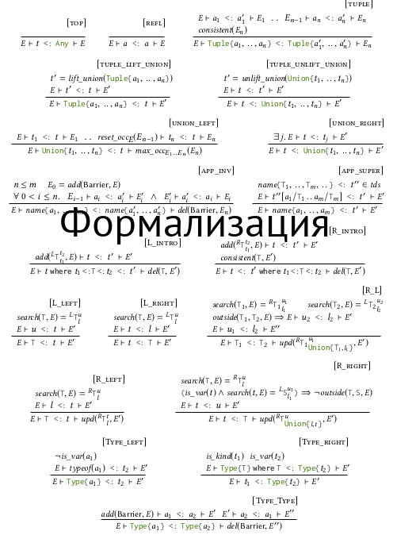
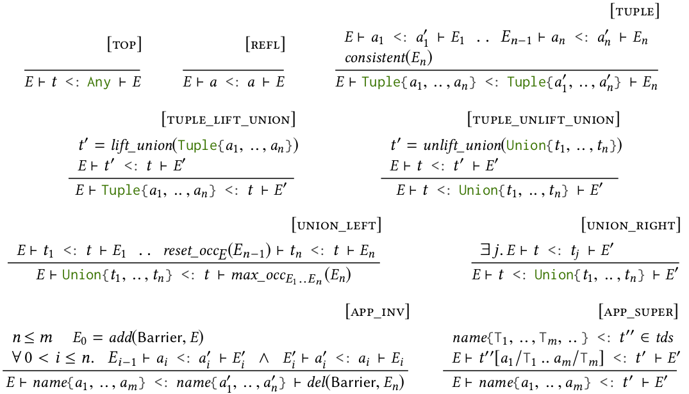
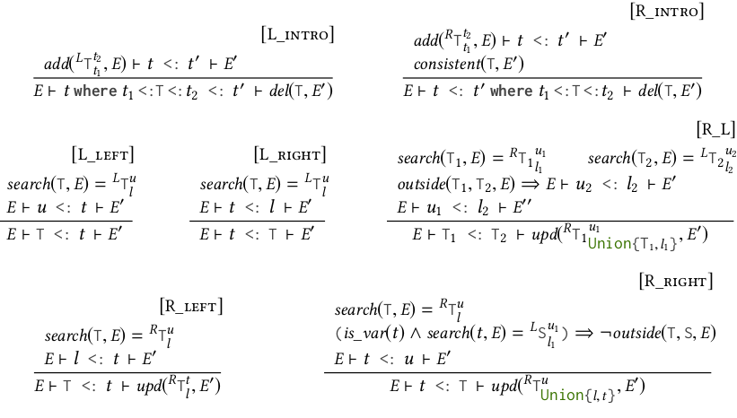

class: center, middle [>>> картинки из презентации](img) # Подтипирование в Julia: рациональная реконструкция¹ ### _Moscow Julia Meetup #3, 10 сентября 2019_ Артём Пеленицын, Northeastern U. (Boston, USA) a.pelenitsyn@gmail.com, [mmcs.sfedu.ru/~ulysses](http://staff.mmcs.sfedu.ru/~ulysses/) <p style="text-align:left"> <small> <span style="font-family: Ubuntu Mono;">———————</span><br> ¹Основано на <a href="https://www.di.ens.fr/~zappa/projects/lambdajulia/">совместной работе</a> с F. Zappa Nardelli, J. Belyakova, J. Bezanson, B. Chung, J. Vitek. </small> </p> --- # Немного о себе .left-column[ ] .right-column[ * 2018–… — аспирант [лаборатории программирования](http://prl.ccs.neu.edu/), NEU, рук. проф. Ян Витек * 2017–2018 — н.с. лаборатории программирования CTU (Прага) * 2012–2016 — ассистент кафедры информатики ЮФУ (Ростов-на-Дону) * 2009 — MSc по прикладной математике и информатики, ЮФУ ] --- ## Краткий курс Julia * Разработка: прикладные математики и хакеры MIT, 2012 * «[динамический](https://en.wikipedia.org/wiki/Dynamic_programming_language)», JIT-компилируемый (в LLVM) * условно ОО, нет статической проверки типов, но типов **много** * Множественная диспетчеризация («мультиметоды»): ```julia *(x::Number, r::Range) = range(x*first(r),...) *(x::Number, y::Number) = *(promote(x,y)...) *(x::T, y::T) where T <: Union{Signed,Unsigned} = mul_int(x,y) print( 3 * 4 ) ``` * ММ опираются на (удивительно сложное) отношение подтипирования --- # Подтипирование в Julia это… .center[ .large[ _3 страницы в PhD Джеффа_ + _2 KLOC C-кода в реализации_ + _много багрепортов_ ]] --- # Краткий курс типов в Julia (I) * Пользовательские типы: абстрактные и конкретные ```julia abstract type Integer <: Real end primitive type Bool <: Integer 8 end mutable struct Point <: Any x::Real y::Bool end ``` * Пользовательские параметрические типы: ```julia struct Rational{T<:Integer} <: Real num :: T den :: T end ``` --- # Краткий курс типов в Julia (II) * Типы-объединения: `Union{Int, Bool}` ∋ `1, 42, true` * Кортежи: .center[`Tuple{Int, Bool, String}` ∋ `(1, true, "Moscow Julia Meetup")`] * Экзистенциалы (`where`-типы): .center[`Vector{T} where T <: Number` ∋ `[1.0, 2.0], [1, 2]`] .left-column[ * (Почти) Полная грамматика: ] .right-column[ ``` τ ::= Any | Union{ τ1 , … , τn } | Tuple{ τ1 , … , τn } | name { τ1 , … , τn } | τ where τ1 <: T <: τ2 ``` ] --- class:center, middle # Игра: Угадай subtyping! --- 1. Объединения ```julia julia> String <: Union{Int, String} ``` ```julia true ``` 2. Кортежи ```julia julia> Tuple{Int, String} <: Tuple{Number, String} ``` ```julia true ``` 3. Взаимодействие между ними ```julia julia> Tuple{Union{A, B}, C} <: Union{Tuple{A, C}, Tuple{B, C}} ``` ```julia true ``` --- 1. Параметрические типы ```julia julia> Vector{Int} <: Vector{Number} ``` ```julia false ``` 2. Экзистенциалы ```julia julia> Vector{Int} <: Vector{T} where T ``` ```julia true ``` 3. Взаимодействие между ними ```julia julia> Vector{Vector{T}} where T <: Vector{Vector{T} where T} ``` ```julia false ``` --- # Выводы 1. Параметрические типы _инвариантны_, а кортежи _ковариантны_ 2. Кортежи _дистрибутивны_ относительно объединений 3. Экзистенциалы могут _сокращать_ область действия на компоненту кортежа, если другие компоненты не зависят от экзистенциальной переменной 4. Объединения (и экзистенциалы) следуют _∀- или ∃-семантике_ в зависимости от (левой или правой, соответственно) позиции в `<:` --- class:center, middle  --- ## Форма утверждения (judgement) * Поскольку есть переменные, нужны «окружения»: ```julia E, T (L, τ1, τ2) ⊢ τ <: τ' ————————————————————————————————————————— E ⊢ (τ where τ1 <: T <: τ2) <: τ' ``` Информация о переменных в E: имя, тег L/R (∀/∃), границы, … * У ∃-переменных (тег R) границы могут меняться, поэтому окружение обновляется: ```julia E ⊢ τ <: τ' ⊢ E' ``` Пример: ```julia Tuple{Ref{Int}, Ref{Bool}} <:̸ Tuple{Ref{T} , Ref{T}} where T ``` --- # Барьеры Мы знаем, что ```julia Vector{Vector{T}} where T <:̸ Vector{Vector{S} where S} ``` но как это получить? Решение: вставлять в окружение `E` _барьеры_ при переходе сквозь инвариантные конструкторы. --- # Противоречивые границы ```julia Tuple{Bool , Ref{Int}} <:̸ Tuple{S, Ref{T}} where S <: T where T ``` Приводит к ограничениям: * `S <: T` * `Bool <: S` * `Int <: T <: Int` ⇒ при выходе ∃-переменной из области видимости, следует проверять множество ограничений на совместность. --- # Иногда они возвращаются _Хранение переменных, вышедших из области видимости_ ```julia Tuple{Ref{S} where S <:Int} <: Tuple{Ref{T}} where T ``` --- # Нормализация и денормализация Без дополнительных преобразований невозможно (непонятно как) доказать * [кейс для нормализации:] ```julia Tuple{ Union{τ1, τ2}, τ } <: Union{ Tuple{τ1, τ}, Tuple{τ2, τ} } ``` * [кейс для денормализации:] ```julia Ref{Union{Tuple{Int}, Tuple{Bool}}} <: Ref{Tuple{T}} where T ``` --- # Диагональное правило > _**Если** переменная имеет ≥2 ковариантных вхождений и ни одного инвариантного, > **то** она может быть инстанцирована только конкретным типом_ Пример: `f(T, T) where T` **не** может быть вызвана так: `f(1, true)` ### Необходимость динамической проверки диагональности ```julia Tuple{Bool, Any} <: Tuple{Union{Bool, T}, T} where T Tuple{String, Any} <:̸ Tuple{Union{Bool, T}, T} where T ``` ⇒ **Выход:** окружение хранит счётчики ко-/инвариантных вхождений переменных --- **Кортежи, объединения, параметрические типы**  --- **Экзистенциалы**  --- # Проблема: формализм тяжёлый, как обосновать корректность? * Регрессионные тесты для подтипирования в дистрибутиве Julia * Фаззинг * ** Логирование реального кода ** --- # Лог-валидация * Инструментирование Julia VM для логирования проверок подтипирования * Запуск тестов ~100 «популярных» пакетов * ⇒ ~ 2 Гб проверок подтипирования (текстовые файлы) Найдено много ошибок у нас и несколько ошибок в Julia --- # Чем мы всё ещё не довольны * Динамическая (Де)Нормализация * Динамическое определение «диагональных переменных» * Барьеры * ⇒ Слишком «алгоритмическая» формулировка * Отсутствие типов-пересечений и сломанный R_Left ([исправлен в 0.7](https://github.com/JuliaLang/julia/pull/26737/)) ```julia julia> Vector{Vector{Number}} <: Vector{Union{Vector{Number}, Vector{S}}} where Int<:S<:Signed true ``` * Отсутствие семантической модели --- # Пространство для дизайна ЯП * [Инвариантные кортежи](https://github.com/JuliaLang/julia/issues/24614) (+ синтаксическая диагональность?): > [Stefan Karpinsky:] _Yes, unfortunately I don't think a gentle transition is really possible. The invariant tuple approach seems to lead to some fundamental difference, which is actually precisely what's potentially appealing about it – that it might lead to different and possibly better semantics._ * Пользовательская вариантность без дистрибутивности (аля C# / Scala) * Мультиметоды в вашем любимом (кроме Julia) ОО-языке (Scala, etc.)